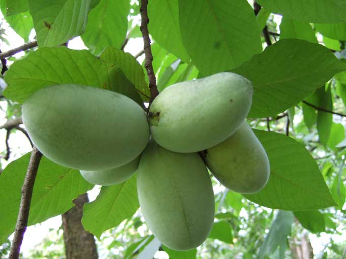
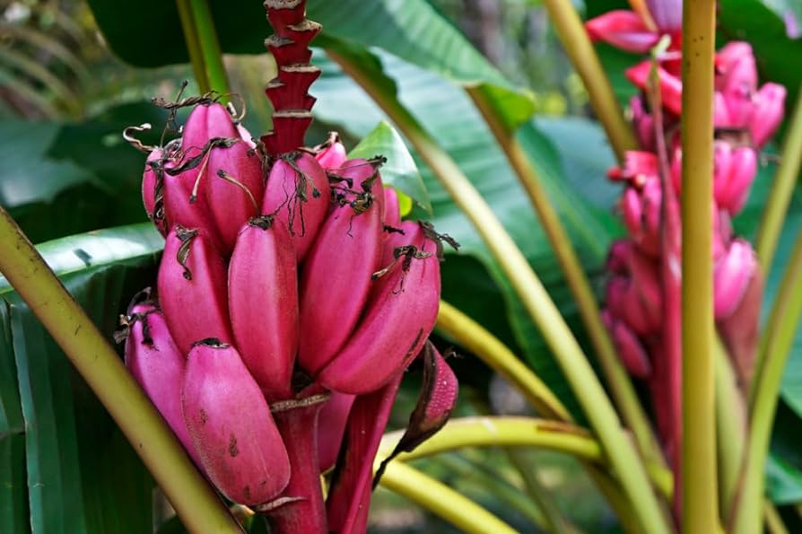
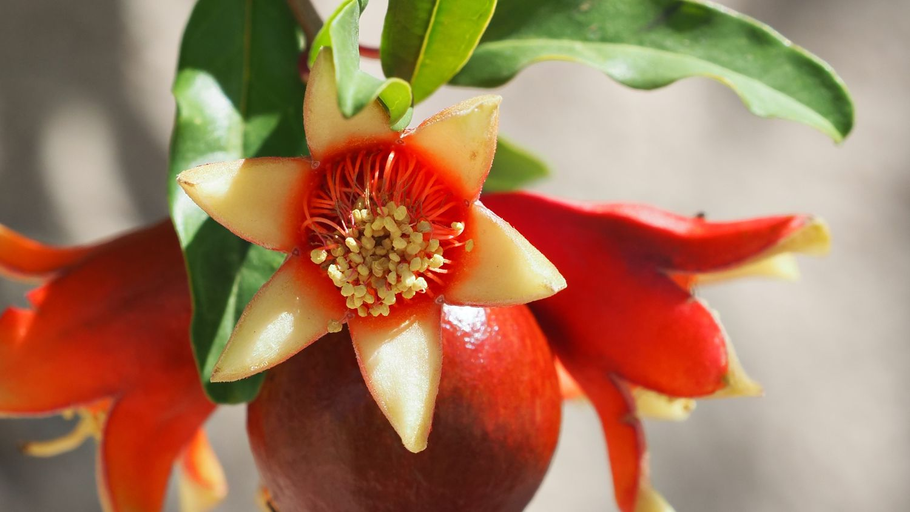

Rare Fruiting Trees
by Ashley Lodnono, 6/20/2024
Paw Paw Trees
The pawpaw tree (Asimina triloba) is a large shrub or small tree that can grow up to 35 feet tall and 12 inches in diameter. It has a broad crown and slender trunk, and its leaves are large, shiny, and dark green with a tropical appearance. The leaves are alternate, simple, and spirally arranged, and can grow up to a foot long and five inches wide. They are broadest above the middle, with smooth margins and pointed tips, and have a whitish coating on the upper surface and rusty hairs on the underside. The leaves are aromatic and smell like bell pepper, and they can turn yellow or golden brown in the fall.
Pawpaw grows in full sun as an adult tree (especially with supplemental irrigation, as is found in Pawpaw orchards) to full shade (as an understory tree under high-branched large trees) and is found in zones 5 to 8.
Fruit Taste
Some describe the flavor as bright, vibrant, and tropical, with a mix of mango, banana, berries, pineapple, and passion fruit. Others say it has a yeasty, floral aftertaste similar to unfiltered wheat beer. Pawpaws have soft, pale yellow flesh that can be jelly-like. Their common names include "poor man's banana," "American custard apple," and "Kentucky banana" because of their flavor and texture, which make them a good substitute for bananas in recipes. Pawpaws have waxy, green skin that turns black as the fruit ripens, and large, glossy, dark brown seeds that are toxic to humans.
Red Dwarf Banana
The Dwarf Red Banana Tree has wide leaves that offer great shade. You can create your own private jungle! You'll notice the Dwarf Red Banana Tree blooming in mid-summer. It's always a treat watch its yellow-green bananas grow in and turn redder as it reaches maturity.
Red Dwarf banana trees thrive in USDA hardiness zones 9-11. These zones provide the warm temperatures and humidity that banana trees need for optimal growth. In cooler climates, they can be grown in containers and brought indoors during the colder months.
Fruit Taste
The Red Dwarf banana, also known as the Dwarf Red banana, offers a unique and delightful flavor profile characterized by its exceptional sweetness and subtle tropical fruitiness. The creamy and smooth texture enhances its rich, indulgent taste, often described as having undertones of raspberry or mango. This exotic flavor combination makes the Red Dwarf banana a favorite for fresh eating and various culinary applications, providing a distinct and enjoyable banana experience.
Nikitski Ronni Pomagranite
The Nikitski Ranni pomegranate is a Russian variety of pomegranate that is known for its sweet and tart flavor and large size. The fruit can grow up to 6 inches in diameter, has light pink skin, and red arils. The Nikitski Ranni pomegranate tree also produces bright orange flowers in the spring and is heat tolerant. The fruit is resistant to cracking and can be harvested between September and October.
The Nikitski Ranni pomegranate tree can grow in USDA zones 6–10 and prefers full sun for best fruit production. It is self-fruitful, but planting a second tree nearby can increase production. When planting a Nikitski Ranni pomegranate tree, it is recommended to soak the roots for 30 minutes, plant immediately, and secure the plant in its pot with clear tape.
Fruit Taste
Pomegranate is a fruit that is sweet and tart with a thick skin. The part of this fruit that you eat is the seeds since they contain juicy flavors. The pomegranate's flavor is sometimes compared to both grapes and cranberries. While it may look slightly different from other fruits, it is just as tasty.